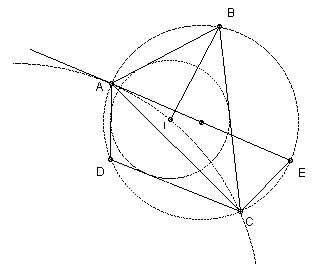

Given three distinct points A, B, C on a circle K, construct a point D on K, such that a circle can be inscribed in ABCD.
Solution
|  |
I be the center of the inscribed circle. Consider the quadrilateral ABCI. ∠BAI = 1/2 ∠BAD and ∠BCI = 1/2 ∠BCD, so ∠BAI + ∠BCI = 90o, since ABCD is cyclic. Hence ∠AIC = 270o - ∠ABC. So if we draw a circle through A and C such that for X points on the arc AC ∠AXC = 90o + ∠ABC, then the intersection of the circle with the angle bisector of ∠ABC gives the point I.
To draw this circle take the diameter AE. Then ∠CAE = 180o - ∠ACE - ∠AEC = 90o - ∠ABC. So we want AE to be tangent to the circle. Thus the center of the circle is on the perpendicular to AE through A and on the perpendicular bisector of AC.
To prove the construction possible we use the fact that a quadrilateral ABCD has an inscribed circle iff AB + CD = BC + AD. For D near C on the circumcircle of ABC we have AB + CD < BC + AD, whilst for D near A we have AB + CD > BC + AD, so as D moves continuously along the circumcircle there must be a point with equality. [Proof that the condition is sufficient: it is clearly necessary (use fact that tangents from a point are of equal length). So take a circle touching AB, BC and AD and let the other tangent from C (not BC) meet AD in D'. Then CD' - CD = AD' - AD, hence D'= D.]

Solutions are also available in: Samuel L Greitzer, International Mathematical Olympiads 1959-1977, MAA 1978, and in István Reiman, International Mathematical Olympiad 1959-1999, ISBN 189-8855-48-X.
© John Scholes
jscholes@kalva.demon.co.uk
21 Sep 1998
Last corrected/updated 7 Mar 04